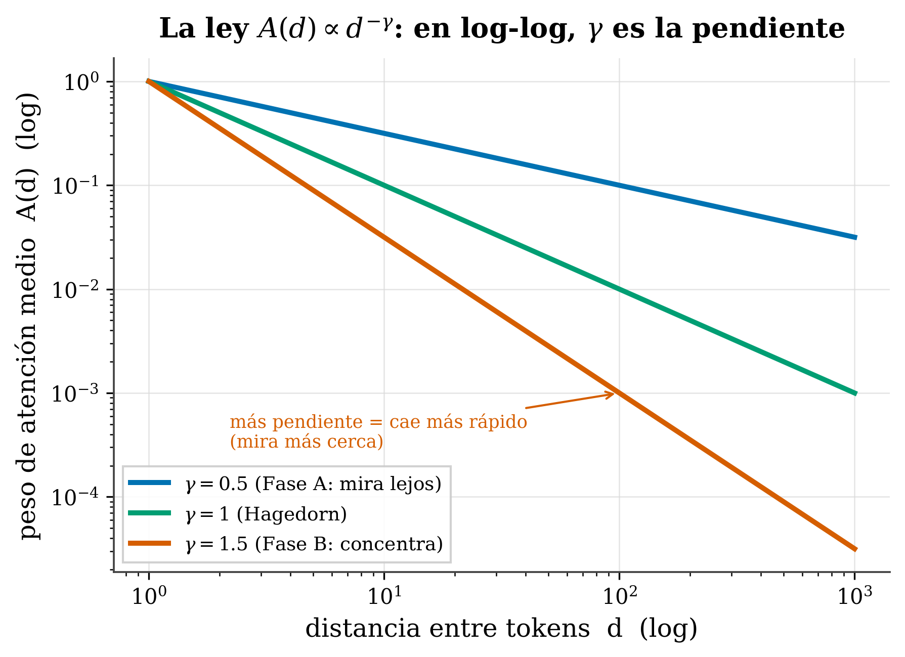

16 The decay law A(d) ∝ d^−γ
Where we are. In Ch. 14 we saw why RoPE’s geometry limits resolution with distance. Now we reach the heart of our work: the law that summarizes that decay, why it’s a power law (and not something else), and —most important and unique— how to predict its exponent γ from the model’s geometry, without training or fitting anything. I’ll explain it step by step; you don’t need statistics to follow it.
16.1 The idea in one sentence
Mean attention between two tokens falls off as a power law with distance, A(d) ∝ d^−γ, and the exponent γ can be predicted from the geometry of RoPE.
16.2 Key concepts and their role in the transformer
Before getting into detail, we define this chapter’s terms and what each one is for inside a transformer:
- Power law A(d) ∝ d^−γ. Definition: mean attention at distance d falls off as a power of d. In the transformer: it sums up, in a single form, how the model spreads its attention across distance; on log-log axes it’s a straight line.
- γ (decay exponent). Definition: the slope (with a minus sign) of that log-log line; how fast attention falls off. In the transformer: it’s the central descriptor — it says whether the model looks far or concentrates close.
- Log-distance constraint. Definition: the only thing RoPE’s geometry fixes on average is \(\mathbb{E}[\log d] = \text{constant}\) (a “budget” of log-distance). In the transformer: it’s the starting fact from which the shape of attention is derived.
- Maximum entropy. Definition: the principle of choosing the distribution that assumes the least consistent with what you know. In the transformer: applied to the log-distance constraint, it gives uniquely the power law (γ is its Lagrange multiplier) — the power-law is a derivation, not a fit.
- γ_Padé. Definition: the prediction of γ from θ and T alone, \(\gamma_{\text{Padé}} = (2\theta - T\sqrt2)/(2\theta + T\sqrt2)\), without training or fitting anything. In the transformer: it’s our differentiator — predicting the center of γ from the geometry, not just observing it.
- Decomposition of γ. Definition: \(\gamma_{\text{obs}} = \gamma_{\text{geom}} + \gamma_{\text{train}} + \gamma_{\text{arch}} + \varepsilon\). In the transformer: it explains where each part of γ comes from and why the geometric prediction hits the center but not the exact value.
- Regimes (Phase A / Hagedorn / Phase B). Definition: γ<1 (looks far), γ=1 (Hagedorn boundary), γ>1 (concentrates close). In the transformer: it classifies how the model uses context, with practical consequences in the coming chapters.
In short: the shape (power-law) is derived, the exponent (γ) is predicted approximately, and the decomposition explains what the geometry alone doesn’t capture.
16.3 The law, and what γ is

A(d)∝d^−γ on log-log axes: it appears as a straight line whose slope is −γ. Small γ (Phase A) = falls off slowly, the model looks far; large γ (Phase B) = falls off fast, concentrates close; γ=1 is the boundary (Hagedorn).
- A(d) = mean attention weight at distance d.
- γ (gamma) = the decay exponent: how fast attention falls off.
A trick to see it: on log-log axes, a power law is a straight line, and γ is its slope (with a minus sign). Measuring γ is, literally, measuring that slope.
16.4 Why a POWER law, and not some other form?
This is the beautiful part —and it’s ours—. The answer comes from two linked ideas.
Step 1 — RoPE imposes a “log-distance” constraint. Because of its logarithmic frequency structure (Ch. 14), the only thing RoPE’s geometry “fixes”, on average, is the logarithm of the typical distance at which it attends: \(\mathbb{E}[\log d] = \text{constant}\) (where E[·] means average or expected value). In plain terms: the model has a fixed “budget” of log-distance, not of distance.
Step 2 — maximum entropy. Among all the ways of spreading attention consistent with that single constraint, which to choose?
🧩 Analogy. If the only thing you’re told about a die is that its mean comes out to 3.5, the most honest bet is that the die is fair (uniform): you don’t invent biases nobody gave you. That’s maximum entropy: the distribution that assumes the least consistent with what you know. (It’s the same principle that, in physics, gives the Boltzmann distribution.)
And here’s the key mathematical result: the maximum-entropy distribution consistent with “E[log d] fixed” is, uniquely, a power law \(p^*(d) \propto d^{-\gamma}\). Not exponential, not Gaussian, not truncated: only the power-law satisfies both things at once. The exponent γ is the “Lagrange multiplier” of that constraint —in plain terms, the knob the constraint fixes, not something we set by hand—.
The power law is not a fit to the data: it’s the only answer to a well-posed inference question (maximum entropy + RoPE’s log-distance constraint). RoPE doesn’t just encode position: it constrains the flow of information, and that constraint determines the shape of the attention distribution.
16.5 What’s truly unique: PREDICTING γ from the geometry
That attention decays as a power-law is something others observe too (e.g. Attention’s Gravitational Field (Zhang 2026), which fits it per head). Our differentiator is not seeing the decay, but predicting its exponent —without fitting anything— from just two numbers: RoPE’s base θ and the length T:
\[ \gamma_{\text{Padé}} = \frac{2\theta - T\sqrt2}{\,2\theta + T\sqrt2\,} \]
What each term does:
- θ = RoPE’s base (a model hyperparameter, e.g. 10000). As you raise θ, the numerator and denominator grow more and more alike → γ → 1 (the model looks far).
- T = the context length you evaluate. As you raise T, the term
T√2weighs more → γ drops (attention falls off faster). - √2 = a constant that comes from RoPE’s geometry.
- The numerator/denominator pair together is a Cayley transform: it compresses the tug-of-war between θ (looking far) and T√2 (long context) into a bounded γ.
This gives the central value of γ before training anything.
Three caveats we make explicit (and that set us apart from selling smoke): 1. The prediction is approximate. In our own honest review, the prediction error of γ_Padé has a median of ~20–22% in Phase A (we corrected a previous 4.3% that was too optimistic). γ_Padé hits the center, not the exact value. 2. We do not claim that RoPE imposes the decay. As we saw in Ch. 14 (Round and Round (Barbero et al. 2024), HoPE (Chen et al. 2024)), the geometry bounds the attainable resolution; γ describes what trained models do, it’s not a decree. 3. The law is robust as a description: A(d)∝d^−γ fits with R² > 0.95 across 46 measurements over 30+ models (from Pythia-70M to BLOOM-7B). What’s solid is the shape; what’s approximate is predicting the exact exponent.
16.6 Why the prediction isn’t perfect: the decomposition
Measured γ is not geometry alone. We decompose it to know where each part comes from:
\[ \gamma_{\text{obs}} = \underbrace{\gamma_{\text{geom}}(\theta, T)}_{\text{what we predict}} + \gamma_{\text{train}} + \gamma_{\text{arch}} + \varepsilon \]
- γ_geom = what the geometry fixes (= γ_Padé). What we understand analytically.
- γ_train = what the training data add (the formation of induction heads; appears from ~400M parameters onward).
- γ_arch = what the architecture adds (GQA, sliding window).
- ε = residual.
That ~20% prediction error is not unexplained noise: it’s, in good part, γ_train + γ_arch. That’s why γ_Padé predicts the center and the decomposition explains the rest. (Honest: the γ_train/imprint term —whose slope ν≈−1/2π would measure how much the training data “imprint” their fingerprint on γ— is provisional —we’ll see it with that caveat—.)
16.7 The regimes: γ<1, γ=1, γ>1
The value of γ says how the model uses context (we develop this in the coming chapters):
- γ < 1 (Phase A): heavy tail, looks far → exploits broad context.
- γ = 1 (Hagedorn): the boundary between the two.
- γ > 1 (Phase B): concentrates close (lots of mass in little context).
In tafagent, Profile mode, paste a model id: it computes γ_Padé (predicted from θ and T), compares it with γ_observed, and tells you which regime (Phase A/B) your model falls in and its effective horizon. It is, literally, this theory turned into a tool.
16.8 Summary
- Attention decays as a power law
A(d)∝d^−γ; in log-log, γ = slope. - Why power-law: it’s the only maximum-entropy distribution consistent with RoPE’s log-distance constraint; γ = Lagrange multiplier. It’s not a fit, it’s a derivation.
- What’s uniquely ours: predicting γ from the geometry (γ_Padé, zero parameters) —not just observing it—.
- Honest: the prediction is approximate (median ~20% error in Phase A, our own review; not the previous 4.3%); the power-law shape is solid (R²>0.95, 30+ models); γ is a measured descriptor, not a geometric decree.
- Decomposition γ_obs = γ_geom + γ_train + γ_arch + ε explains why the prediction isn’t exact.
- Regimes: γ<1 looks far · γ=1 Hagedorn · γ>1 concentrates.
Next (Chapter 16): if we can measure γ in any model, let’s measure it in many — the γ atlas of 42 models, the cross-architecture map nobody else has.
16.9 Exercises
- The slope. On log-log axes you see two attention lines, one with slope −0.4 and another with −1.3. Which looks farther? Which is Phase A and which Phase B?
- Maximum entropy. In your own words: why is “the most honest distribution given only E[log d]” the power-law and not a Gaussian?
- Honest prediction. If γ_Padé predicts 0.7 and the measured γ is 0.55, which term of the decomposition could explain the difference?
- Tool. Which three things does tafagent return for you when profiling a model with respect to γ?
The full derivation of γ_Padé, the six-axis decomposition, and the data that support this chapter are open: Predicting How Transformers Attend (Zenodo).